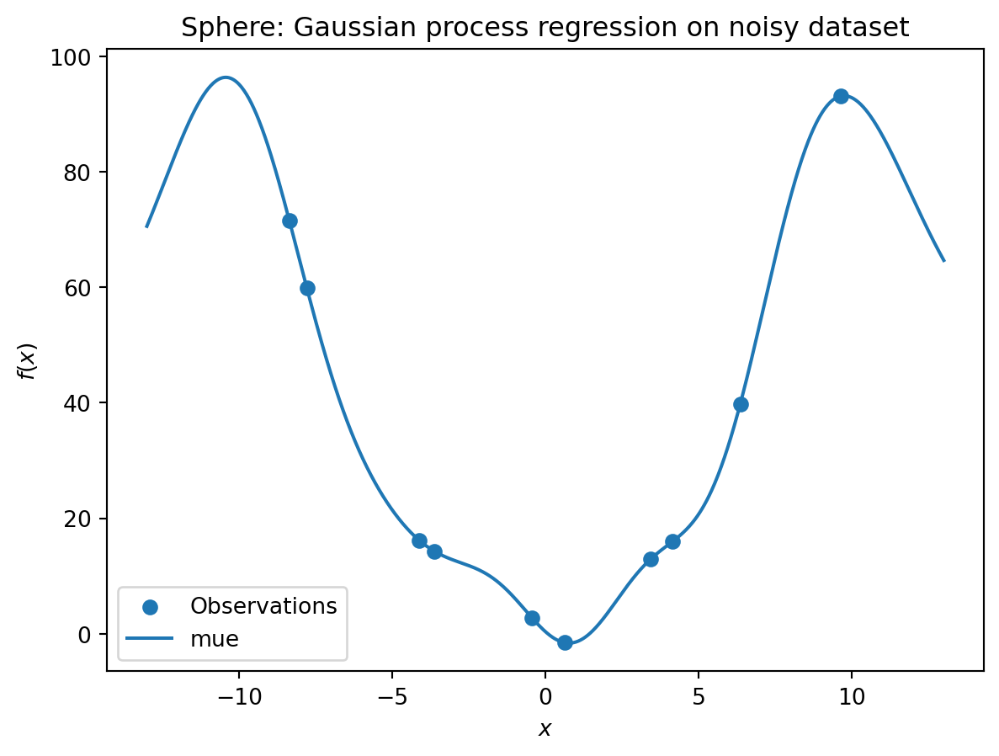

import numpy as np
from math import inf
from spotpython.fun.objectivefunctions import analytical
from spotpython.spot import spot
from spotpython.utils.init import fun_control_init, surrogate_control_init, design_control_init
import matplotlib.pyplot as plt12 Expected Improvement
This chapter describes, analyzes, and compares different infill criterion. An infill criterion defines how the next point \(x_{n+1}\) is selected from the surrogate model \(S\). Expected improvement is a popular infill criterion in Bayesian optimization.
12.1 Example: Spot and the 1-dim Sphere Function
12.1.1 The Objective Function: 1-dim Sphere
- The
spotpythonpackage provides several classes of objective functions. - We will use an analytical objective function, i.e., a function that can be described by a (closed) formula: \[f(x) = x^2 \]
fun = analytical().fun_sphere- The size of the
lowerbound vector determines the problem dimension. - Here we will use
np.array([-1]), i.e., a one-dim function.
TensorBoard
Similar to the one-dimensional case, which was introduced in Section Section 7.5, we can use TensorBoard to monitor the progress of the optimization. We will use the same code, only the prefix is different:
from spotpython.utils.init import fun_control_init
PREFIX = "07_Y"
fun_control = fun_control_init(
PREFIX=PREFIX,
fun_evals = 25,
lower = np.array([-1]),
upper = np.array([1]),
tolerance_x = np.sqrt(np.spacing(1)),)
design_control = design_control_init(init_size=10)spot_1 = spot.Spot(
fun=fun,
fun_control=fun_control,
design_control=design_control)
spot_1.run()spotpython tuning: 4.959603317754042e-09 [####------] 44.00%
spotpython tuning: 4.959603317754042e-09 [#####-----] 48.00%
spotpython tuning: 4.959603317754042e-09 [#####-----] 52.00%
spotpython tuning: 4.959603317754042e-09 [######----] 56.00%
spotpython tuning: 1.7538785665210774e-10 [######----] 60.00%
spotpython tuning: 5.299979470384224e-12 [######----] 64.00%
spotpython tuning: 5.299979470384224e-12 [#######---] 68.00%
spotpython tuning: 5.299979470384224e-12 [#######---] 72.00%
spotpython tuning: 5.299979470384224e-12 [########--] 76.00%
spotpython tuning: 5.299979470384224e-12 [########--] 80.00%
spotpython tuning: 5.299979470384224e-12 [########--] 84.00%
spotpython tuning: 5.299979470384224e-12 [#########-] 88.00%
spotpython tuning: 5.299979470384224e-12 [#########-] 92.00%
spotpython tuning: 5.299979470384224e-12 [##########] 96.00%
spotpython tuning: 5.299979470384224e-12 [##########] 100.00% Done...
<spotpython.spot.spot.Spot at 0x107e346e0>12.1.2 Results
spot_1.print_results()min y: 5.299979470384224e-12
x0: 2.302168427892326e-06[['x0', 2.302168427892326e-06]]spot_1.plot_progress(log_y=True)

12.2 Same, but with EI as infill_criterion
PREFIX = "07_EI_ISO"
fun_control = fun_control_init(
PREFIX=PREFIX,
lower = np.array([-1]),
upper = np.array([1]),
fun_evals = 25,
tolerance_x = np.sqrt(np.spacing(1)),
infill_criterion = "ei")spot_1_ei = spot.Spot(fun=fun,
fun_control=fun_control)
spot_1_ei.run()spotpython tuning: 7.188987729200596e-08 [####------] 44.00%
spotpython tuning: 7.188987729200596e-08 [#####-----] 48.00%
spotpython tuning: 7.188987729200596e-08 [#####-----] 52.00%
spotpython tuning: 7.188987729200596e-08 [######----] 56.00%
spotpython tuning: 5.939954122907979e-08 [######----] 60.00%
spotpython tuning: 1.3947524785731501e-08 [######----] 64.00%
spotpython tuning: 1.3947524785731501e-08 [#######---] 68.00%
spotpython tuning: 1.3947524785731501e-08 [#######---] 72.00%
spotpython tuning: 1.3947524785731501e-08 [########--] 76.00%
spotpython tuning: 1.3947524785731501e-08 [########--] 80.00%
spotpython tuning: 4.854409561808151e-10 [########--] 84.00%
spotpython tuning: 4.854409561808151e-10 [#########-] 88.00%
spotpython tuning: 2.611463411033466e-11 [#########-] 92.00%
spotpython tuning: 2.611463411033466e-11 [##########] 96.00%
spotpython tuning: 2.611463411033466e-11 [##########] 100.00% Done...
<spotpython.spot.spot.Spot at 0x34a26f7d0>spot_1_ei.plot_progress(log_y=True)
spot_1_ei.print_results()min y: 2.611463411033466e-11
x0: 5.110247949985857e-06[['x0', 5.110247949985857e-06]]
12.3 Non-isotropic Kriging
PREFIX = "07_EI_NONISO"
fun_control = fun_control_init(
PREFIX=PREFIX,
lower = np.array([-1, -1]),
upper = np.array([1, 1]),
fun_evals = 25,
tolerance_x = np.sqrt(np.spacing(1)),
infill_criterion = "ei")
surrogate_control = surrogate_control_init(
n_theta=2,
noise=False,
)spot_2_ei_noniso = spot.Spot(fun=fun,
fun_control=fun_control,
surrogate_control=surrogate_control)
spot_2_ei_noniso.run()spotpython tuning: 1.8084153639415482e-05 [####------] 44.00%
spotpython tuning: 1.8084153639415482e-05 [#####-----] 48.00%
spotpython tuning: 1.8084153639415482e-05 [#####-----] 52.00%
spotpython tuning: 1.8084153639415482e-05 [######----] 56.00%
spotpython tuning: 1.8084153639415482e-05 [######----] 60.00%
spotpython tuning: 1.8084153639415482e-05 [######----] 64.00%
spotpython tuning: 1.8084153639415482e-05 [#######---] 68.00%
spotpython tuning: 1.8084153639415482e-05 [#######---] 72.00%
spotpython tuning: 1.8084153639415482e-05 [########--] 76.00%
spotpython tuning: 1.7065306452997463e-05 [########--] 80.00%
spotpython tuning: 1.7065306452997463e-05 [########--] 84.00%
spotpython tuning: 7.056740725219606e-06 [#########-] 88.00%
spotpython tuning: 7.056740725219606e-06 [#########-] 92.00%
spotpython tuning: 7.056740725219606e-06 [##########] 96.00%
spotpython tuning: 7.056740725219606e-06 [##########] 100.00% Done...
<spotpython.spot.spot.Spot at 0x354c55cd0>spot_2_ei_noniso.plot_progress(log_y=True)spot_2_ei_noniso.print_results()min y: 7.056740725219606e-06
x0: -0.0025062845492088196
x1: -0.0008804989969425007[['x0', -0.0025062845492088196], ['x1', -0.0008804989969425007]]spot_2_ei_noniso.surrogate.plot()

12.4 Using sklearn Surrogates
12.4.1 The spot Loop
The spot loop consists of the following steps:
- Init: Build initial design \(X\)
- Evaluate initial design on real objective \(f\): \(y = f(X)\)
- Build surrogate: \(S = S(X,y)\)
- Optimize on surrogate: \(X_0 = \text{optimize}(S)\)
- Evaluate on real objective: \(y_0 = f(X_0)\)
- Impute (Infill) new points: \(X = X \cup X_0\), \(y = y \cup y_0\).
- Got 3.
The spot loop is implemented in R as follows:

12.4.2 spot: The Initial Model
12.4.2.1 Example: Modifying the initial design size
This is the “Example: Modifying the initial design size” from Chapter 4.5.1 in [bart21i].
spot_ei = spot.Spot(fun=fun,
fun_control=fun_control_init(
lower = np.array([-1,-1]),
upper= np.array([1,1])),
design_control = design_control_init(init_size=5))
spot_ei.run()spotpython tuning: 0.13771720111978272 [####------] 40.00%
spotpython tuning: 0.008762260544617942 [#####-----] 46.67%
spotpython tuning: 0.0028383641218116835 [#####-----] 53.33%
spotpython tuning: 0.0008109493206433335 [######----] 60.00%
spotpython tuning: 0.0003652470205973824 [#######---] 66.67%
spotpython tuning: 0.00036032551596159646 [#######---] 73.33%
spotpython tuning: 0.00035888041070709844 [########--] 80.00%
spotpython tuning: 0.00032677794812133767 [#########-] 86.67%
spotpython tuning: 0.0002726988496483528 [#########-] 93.33%
spotpython tuning: 0.00015304178060680248 [##########] 100.00% Done...
<spotpython.spot.spot.Spot at 0x3587f34d0>spot_ei.plot_progress()
np.min(spot_1.y), np.min(spot_ei.y)(5.299979470384224e-12, 0.00015304178060680248)12.4.3 Init: Build Initial Design
from spotpython.design.spacefilling import spacefilling
from spotpython.build.kriging import Kriging
from spotpython.fun.objectivefunctions import analytical
gen = spacefilling(2)
rng = np.random.RandomState(1)
lower = np.array([-5,-0])
upper = np.array([10,15])
fun = analytical().fun_branin
X = gen.scipy_lhd(10, lower=lower, upper = upper)
print(X)
y = fun(X, fun_control=fun_control)
print(y)[[ 8.97647221 13.41926847]
[ 0.66946019 1.22344228]
[ 5.23614115 13.78185824]
[ 5.6149825 11.5851384 ]
[-1.72963184 1.66516096]
[-4.26945568 7.1325531 ]
[ 1.26363761 10.17935555]
[ 2.88779942 8.05508969]
[-3.39111089 4.15213772]
[ 7.30131231 5.22275244]]
[128.95676449 31.73474356 172.89678121 126.71295908 64.34349975
70.16178611 48.71407916 31.77322887 76.91788181 30.69410529]S = Kriging(name='kriging', seed=123)
S.fit(X, y)
S.plot()
gen = spacefilling(2, seed=123)
X0 = gen.scipy_lhd(3)
gen = spacefilling(2, seed=345)
X1 = gen.scipy_lhd(3)
X2 = gen.scipy_lhd(3)
gen = spacefilling(2, seed=123)
X3 = gen.scipy_lhd(3)
X0, X1, X2, X3(array([[0.77254938, 0.31539299],
[0.59321338, 0.93854273],
[0.27469803, 0.3959685 ]]),
array([[0.78373509, 0.86811887],
[0.06692621, 0.6058029 ],
[0.41374778, 0.00525456]]),
array([[0.121357 , 0.69043832],
[0.41906219, 0.32838498],
[0.86742658, 0.52910374]]),
array([[0.77254938, 0.31539299],
[0.59321338, 0.93854273],
[0.27469803, 0.3959685 ]]))12.4.4 Evaluate
12.4.5 Build Surrogate
12.4.6 A Simple Predictor
The code below shows how to use a simple model for prediction.
Assume that only two (very costly) measurements are available:
- f(0) = 0.5
- f(2) = 2.5
We are interested in the value at \(x_0 = 1\), i.e., \(f(x_0 = 1)\), but cannot run an additional, third experiment.
from sklearn import linear_model
X = np.array([[0], [2]])
y = np.array([0.5, 2.5])
S_lm = linear_model.LinearRegression()
S_lm = S_lm.fit(X, y)
X0 = np.array([[1]])
y0 = S_lm.predict(X0)
print(y0)[1.5]- Central Idea:
- Evaluation of the surrogate model
S_lmis much cheaper (or / and much faster) than running the real-world experiment \(f\).
- Evaluation of the surrogate model
12.5 Gaussian Processes regression: basic introductory example
This example was taken from scikit-learn. After fitting our model, we see that the hyperparameters of the kernel have been optimized. Now, we will use our kernel to compute the mean prediction of the full dataset and plot the 95% confidence interval.
import numpy as np
import matplotlib.pyplot as plt
import math as m
from sklearn.gaussian_process import GaussianProcessRegressor
from sklearn.gaussian_process.kernels import RBF
X = np.linspace(start=0, stop=10, num=1_000).reshape(-1, 1)
y = np.squeeze(X * np.sin(X))
rng = np.random.RandomState(1)
training_indices = rng.choice(np.arange(y.size), size=6, replace=False)
X_train, y_train = X[training_indices], y[training_indices]
kernel = 1 * RBF(length_scale=1.0, length_scale_bounds=(1e-2, 1e2))
gaussian_process = GaussianProcessRegressor(kernel=kernel, n_restarts_optimizer=9)
gaussian_process.fit(X_train, y_train)
gaussian_process.kernel_
mean_prediction, std_prediction = gaussian_process.predict(X, return_std=True)
plt.plot(X, y, label=r"$f(x) = x \sin(x)$", linestyle="dotted")
plt.scatter(X_train, y_train, label="Observations")
plt.plot(X, mean_prediction, label="Mean prediction")
plt.fill_between(
X.ravel(),
mean_prediction - 1.96 * std_prediction,
mean_prediction + 1.96 * std_prediction,
alpha=0.5,
label=r"95% confidence interval",
)
plt.legend()
plt.xlabel("$x$")
plt.ylabel("$f(x)$")
_ = plt.title("sk-learn Version: Gaussian process regression on noise-free dataset")from spotpython.build.kriging import Kriging
import numpy as np
import matplotlib.pyplot as plt
rng = np.random.RandomState(1)
X = np.linspace(start=0, stop=10, num=1_000).reshape(-1, 1)
y = np.squeeze(X * np.sin(X))
training_indices = rng.choice(np.arange(y.size), size=6, replace=False)
X_train, y_train = X[training_indices], y[training_indices]
S = Kriging(name='kriging', seed=123, log_level=50, cod_type="norm")
S.fit(X_train, y_train)
mean_prediction, std_prediction, ei = S.predict(X, return_val="all")
std_prediction
plt.plot(X, y, label=r"$f(x) = x \sin(x)$", linestyle="dotted")
plt.scatter(X_train, y_train, label="Observations")
plt.plot(X, mean_prediction, label="Mean prediction")
plt.fill_between(
X.ravel(),
mean_prediction - 1.96 * std_prediction,
mean_prediction + 1.96 * std_prediction,
alpha=0.5,
label=r"95% confidence interval",
)
plt.legend()
plt.xlabel("$x$")
plt.ylabel("$f(x)$")
_ = plt.title("spotpython Version: Gaussian process regression on noise-free dataset")
12.6 The Surrogate: Using scikit-learn models
Default is the internal kriging surrogate.
S_0 = Kriging(name='kriging', seed=123)Models from scikit-learn can be selected, e.g., Gaussian Process:
# Needed for the sklearn surrogates:
from sklearn.gaussian_process import GaussianProcessRegressor
from sklearn.gaussian_process.kernels import RBF
from sklearn.tree import DecisionTreeRegressor
from sklearn.ensemble import RandomForestRegressor
from sklearn import linear_model
from sklearn import tree
import pandas as pdkernel = 1 * RBF(length_scale=1.0, length_scale_bounds=(1e-2, 1e2))
S_GP = GaussianProcessRegressor(kernel=kernel, n_restarts_optimizer=9)- and many more:
S_Tree = DecisionTreeRegressor(random_state=0)
S_LM = linear_model.LinearRegression()
S_Ridge = linear_model.Ridge()
S_RF = RandomForestRegressor(max_depth=2, random_state=0) - The scikit-learn GP model
S_GPis selected.
S = S_GPisinstance(S, GaussianProcessRegressor)Truefrom spotpython.fun.objectivefunctions import analytical
fun = analytical().fun_branin
fun_control = fun_control_init(
lower = np.array([-5,-0]),
upper = np.array([10,15]),
fun_evals = 15)
design_control = design_control_init(init_size=5)
spot_GP = spot.Spot(fun=fun,
fun_control=fun_control,
surrogate=S,
design_control=design_control)
spot_GP.run()spotpython tuning: 24.51465459019188 [####------] 40.00%
spotpython tuning: 11.003101704408273 [#####-----] 46.67%
spotpython tuning: 11.003101704408273 [#####-----] 53.33%
spotpython tuning: 7.281515308693262 [######----] 60.00%
spotpython tuning: 7.281515308693262 [#######---] 66.67%
spotpython tuning: 7.281515308693262 [#######---] 73.33%
spotpython tuning: 2.9519942803779493 [########--] 80.00%
spotpython tuning: 2.9519942803779493 [#########-] 86.67%
spotpython tuning: 2.1049767654946914 [#########-] 93.33%
spotpython tuning: 1.9431498675678949 [##########] 100.00% Done...
<spotpython.spot.spot.Spot at 0x35d7d0080>spot_GP.yarray([ 69.32459936, 152.38491454, 107.92560483, 24.51465459,
76.73500031, 86.30429136, 11.0031017 , 16.11757292,
7.28151531, 21.82295775, 10.96088904, 2.95199428,
3.0290972 , 2.10497677, 1.94314987])spot_GP.plot_progress()
spot_GP.print_results()min y: 1.9431498675678949
x0: 10.0
x1: 2.9999226833344648[['x0', 10.0], ['x1', 2.9999226833344648]]12.7 Additional Examples
# Needed for the sklearn surrogates:
from sklearn.gaussian_process import GaussianProcessRegressor
from sklearn.gaussian_process.kernels import RBF
from sklearn.tree import DecisionTreeRegressor
from sklearn.ensemble import RandomForestRegressor
from sklearn import linear_model
from sklearn import tree
import pandas as pdkernel = 1 * RBF(length_scale=1.0, length_scale_bounds=(1e-2, 1e2))
S_GP = GaussianProcessRegressor(kernel=kernel, n_restarts_optimizer=9)from spotpython.build.kriging import Kriging
import numpy as np
import spotpython
from spotpython.fun.objectivefunctions import analytical
from spotpython.spot import spot
S_K = Kriging(name='kriging',
seed=123,
log_level=50,
infill_criterion = "y",
n_theta=1,
noise=False,
cod_type="norm")
fun = analytical().fun_sphere
fun_control = fun_control_init(
lower = np.array([-1,-1]),
upper = np.array([1,1]),
fun_evals = 25)
spot_S_K = spot.Spot(fun=fun,
fun_control=fun_control,
surrogate=S_K,
design_control=design_control,
surrogate_control=surrogate_control)
spot_S_K.run()spotpython tuning: 0.13771716844457255 [##--------] 24.00%
spotpython tuning: 0.008763992988881779 [###-------] 28.00%
spotpython tuning: 0.0028324931031249094 [###-------] 32.00%
spotpython tuning: 0.0008161627041911008 [####------] 36.00%
spotpython tuning: 0.00036337249944152984 [####------] 40.00%
spotpython tuning: 0.0003620634598515755 [####------] 44.00%
spotpython tuning: 0.00036019126988579237 [#####-----] 48.00%
spotpython tuning: 0.0003310003348891555 [#####-----] 52.00%
spotpython tuning: 0.0002796810486585005 [######----] 56.00%
spotpython tuning: 0.00016668209586740844 [######----] 60.00%
spotpython tuning: 2.105184213458755e-05 [######----] 64.00%
spotpython tuning: 2.33449020805854e-06 [#######---] 68.00%
spotpython tuning: 7.112087478830758e-07 [#######---] 72.00%
spotpython tuning: 4.3581016990329405e-07 [########--] 76.00%
spotpython tuning: 3.9965568597157324e-07 [########--] 80.00%
spotpython tuning: 1.9740797347254742e-07 [########--] 84.00%
spotpython tuning: 1.6627705746993065e-07 [#########-] 88.00%
spotpython tuning: 1.6627705746993065e-07 [#########-] 92.00%
spotpython tuning: 1.6627705746993065e-07 [##########] 96.00%
spotpython tuning: 1.6627705746993065e-07 [##########] 100.00% Done...
<spotpython.spot.spot.Spot at 0x35d2703e0>spot_S_K.plot_progress(log_y=True)
spot_S_K.surrogate.plot()
spot_S_K.print_results()min y: 1.6627705746993065e-07
x0: 0.0003245075243596407
x1: 0.00024692493617273215[['x0', 0.0003245075243596407], ['x1', 0.00024692493617273215]]12.7.1 Optimize on Surrogate
12.7.2 Evaluate on Real Objective
12.7.3 Impute / Infill new Points
12.8 Tests
import numpy as np
from spotpython.spot import spot
from spotpython.fun.objectivefunctions import analytical
fun_sphere = analytical().fun_sphere
fun_control = fun_control_init(
lower=np.array([-1, -1]),
upper=np.array([1, 1]),
n_points = 2)
spot_1 = spot.Spot(
fun=fun_sphere,
fun_control=fun_control,
)
# (S-2) Initial Design:
spot_1.X = spot_1.design.scipy_lhd(
spot_1.design_control["init_size"], lower=spot_1.lower, upper=spot_1.upper
)
print(spot_1.X)
# (S-3): Eval initial design:
spot_1.y = spot_1.fun(spot_1.X)
print(spot_1.y)
spot_1.fit_surrogate()
X0 = spot_1.suggest_new_X()
print(X0)
assert X0.size == spot_1.n_points * spot_1.k[[ 0.86352963 0.7892358 ]
[-0.24407197 -0.83687436]
[ 0.36481882 0.8375811 ]
[ 0.415331 0.54468512]
[-0.56395091 -0.77797854]
[-0.90259409 -0.04899292]
[-0.16484832 0.35724741]
[ 0.05170659 0.07401196]
[-0.78548145 -0.44638164]
[ 0.64017497 -0.30363301]]
[1.36857656 0.75992983 0.83463487 0.46918172 0.92329124 0.8170764
0.15480068 0.00815134 0.81623768 0.502017 ]
[[0.00163775 0.00441483]
[0.00163816 0.00398502]]12.9 EI: The Famous Schonlau Example
X_train0 = np.array([1, 2, 3, 4, 12]).reshape(-1,1)
X_train = np.linspace(start=0, stop=10, num=5).reshape(-1, 1)from spotpython.build.kriging import Kriging
import numpy as np
import matplotlib.pyplot as plt
X_train = np.array([1., 2., 3., 4., 12.]).reshape(-1,1)
y_train = np.array([0., -1.75, -2, -0.5, 5.])
S = Kriging(name='kriging', seed=123, log_level=50, n_theta=1, noise=False, cod_type="norm")
S.fit(X_train, y_train)
X = np.linspace(start=0, stop=13, num=1000).reshape(-1, 1)
mean_prediction, std_prediction, ei = S.predict(X, return_val="all")
plt.scatter(X_train, y_train, label="Observations")
plt.plot(X, mean_prediction, label="Mean prediction")
if True:
plt.fill_between(
X.ravel(),
mean_prediction - 2 * std_prediction,
mean_prediction + 2 * std_prediction,
alpha=0.5,
label=r"95% confidence interval",
)
plt.legend()
plt.xlabel("$x$")
plt.ylabel("$f(x)$")
_ = plt.title("Gaussian process regression on noise-free dataset")#plt.plot(X, y, label=r"$f(x) = x \sin(x)$", linestyle="dotted")
# plt.scatter(X_train, y_train, label="Observations")
plt.plot(X, -ei, label="Expected Improvement")
plt.legend()
plt.xlabel("$x$")
plt.ylabel("$f(x)$")
_ = plt.title("Gaussian process regression on noise-free dataset")
S.log{'negLnLike': array([1.20788205]),
'theta': array([-0.99002505]),
'p': [],
'Lambda': []}12.10 EI: The Forrester Example
from spotpython.build.kriging import Kriging
import numpy as np
import matplotlib.pyplot as plt
import spotpython
from spotpython.fun.objectivefunctions import analytical
from spotpython.spot import spot
# exact x locations are unknown:
X_train = np.array([0.0, 0.175, 0.225, 0.3, 0.35, 0.375, 0.5,1]).reshape(-1,1)
fun = analytical().fun_forrester
fun_control = fun_control_init(
PREFIX="07_EI_FORRESTER",
sigma=1.0,
seed=123,)
y_train = fun(X_train, fun_control=fun_control)
S = Kriging(name='kriging', seed=123, log_level=50, n_theta=1, noise=False, cod_type="norm")
S.fit(X_train, y_train)
X = np.linspace(start=0, stop=1, num=1000).reshape(-1, 1)
mean_prediction, std_prediction, ei = S.predict(X, return_val="all")
plt.scatter(X_train, y_train, label="Observations")
plt.plot(X, mean_prediction, label="Mean prediction")
if True:
plt.fill_between(
X.ravel(),
mean_prediction - 2 * std_prediction,
mean_prediction + 2 * std_prediction,
alpha=0.5,
label=r"95% confidence interval",
)
plt.legend()
plt.xlabel("$x$")
plt.ylabel("$f(x)$")
_ = plt.title("Gaussian process regression on noise-free dataset")#plt.plot(X, y, label=r"$f(x) = x \sin(x)$", linestyle="dotted")
# plt.scatter(X_train, y_train, label="Observations")
plt.plot(X, -ei, label="Expected Improvement")
plt.legend()
plt.xlabel("$x$")
plt.ylabel("$f(x)$")
_ = plt.title("Gaussian process regression on noise-free dataset")
12.11 Noise
import numpy as np
import spotpython
from spotpython.fun.objectivefunctions import analytical
from spotpython.spot import spot
from spotpython.design.spacefilling import spacefilling
from spotpython.build.kriging import Kriging
import matplotlib.pyplot as plt
gen = spacefilling(1)
rng = np.random.RandomState(1)
lower = np.array([-10])
upper = np.array([10])
fun = analytical().fun_sphere
fun_control = fun_control_init(
PREFIX="07_Y",
sigma=2.0,
seed=123,)
X = gen.scipy_lhd(10, lower=lower, upper = upper)
print(X)
y = fun(X, fun_control=fun_control)
print(y)
y.shape
X_train = X.reshape(-1,1)
y_train = y
S = Kriging(name='kriging',
seed=123,
log_level=50,
n_theta=1,
noise=False)
S.fit(X_train, y_train)
X_axis = np.linspace(start=-13, stop=13, num=1000).reshape(-1, 1)
mean_prediction, std_prediction, ei = S.predict(X_axis, return_val="all")
#plt.plot(X, y, label=r"$f(x) = x \sin(x)$", linestyle="dotted")
plt.scatter(X_train, y_train, label="Observations")
#plt.plot(X, ei, label="Expected Improvement")
plt.plot(X_axis, mean_prediction, label="mue")
plt.legend()
plt.xlabel("$x$")
plt.ylabel("$f(x)$")
_ = plt.title("Sphere: Gaussian process regression on noisy dataset")[[ 0.63529627]
[-4.10764204]
[-0.44071975]
[ 9.63125638]
[-8.3518118 ]
[-3.62418901]
[ 4.15331 ]
[ 3.4468512 ]
[ 6.36049088]
[-7.77978539]]
[-1.57464135 16.13714981 2.77008442 93.14904827 71.59322218 14.28895359
15.9770567 12.96468767 39.82265329 59.88028242]
S.log{'negLnLike': array([26.18505386]),
'theta': array([-1.10547468]),
'p': [],
'Lambda': []}S = Kriging(name='kriging',
seed=123,
log_level=50,
n_theta=1,
noise=True)
S.fit(X_train, y_train)
X_axis = np.linspace(start=-13, stop=13, num=1000).reshape(-1, 1)
mean_prediction, std_prediction, ei = S.predict(X_axis, return_val="all")
#plt.plot(X, y, label=r"$f(x) = x \sin(x)$", linestyle="dotted")
plt.scatter(X_train, y_train, label="Observations")
#plt.plot(X, ei, label="Expected Improvement")
plt.plot(X_axis, mean_prediction, label="mue")
plt.legend()
plt.xlabel("$x$")
plt.ylabel("$f(x)$")
_ = plt.title("Sphere: Gaussian process regression with nugget on noisy dataset")
S.log{'negLnLike': array([21.82276721]),
'theta': array([-2.94197609]),
'p': [],
'Lambda': array([4.89634048e-05])}12.12 Cubic Function
import numpy as np
import spotpython
from spotpython.fun.objectivefunctions import analytical
from spotpython.spot import spot
from spotpython.design.spacefilling import spacefilling
from spotpython.build.kriging import Kriging
import matplotlib.pyplot as plt
gen = spacefilling(1)
rng = np.random.RandomState(1)
lower = np.array([-10])
upper = np.array([10])
fun = analytical().fun_cubed
fun_control = fun_control_init(
PREFIX="07_Y",
sigma=10.0,
seed=123,)
X = gen.scipy_lhd(10, lower=lower, upper = upper)
print(X)
y = fun(X, fun_control=fun_control)
print(y)
y.shape
X_train = X.reshape(-1,1)
y_train = y
S = Kriging(name='kriging', seed=123, log_level=50, n_theta=1, noise=False)
S.fit(X_train, y_train)
X_axis = np.linspace(start=-13, stop=13, num=1000).reshape(-1, 1)
mean_prediction, std_prediction, ei = S.predict(X_axis, return_val="all")
plt.scatter(X_train, y_train, label="Observations")
#plt.plot(X, ei, label="Expected Improvement")
plt.plot(X_axis, mean_prediction, label="mue")
plt.legend()
plt.xlabel("$x$")
plt.ylabel("$f(x)$")
_ = plt.title("Cubed: Gaussian process regression on noisy dataset")[[ 0.63529627]
[-4.10764204]
[-0.44071975]
[ 9.63125638]
[-8.3518118 ]
[-3.62418901]
[ 4.15331 ]
[ 3.4468512 ]
[ 6.36049088]
[-7.77978539]]
[ 2.56406437e-01 -6.93071067e+01 -8.56027124e-02 8.93405931e+02
-5.82561927e+02 -4.76028022e+01 7.16445311e+01 4.09512920e+01
2.57319028e+02 -4.70871982e+02]S = Kriging(name='kriging', seed=123, log_level=0, n_theta=1, noise=True)
S.fit(X_train, y_train)
X_axis = np.linspace(start=-13, stop=13, num=1000).reshape(-1, 1)
mean_prediction, std_prediction, ei = S.predict(X_axis, return_val="all")
plt.scatter(X_train, y_train, label="Observations")
#plt.plot(X, ei, label="Expected Improvement")
plt.plot(X_axis, mean_prediction, label="mue")
plt.legend()
plt.xlabel("$x$")
plt.ylabel("$f(x)$")
_ = plt.title("Cubed: Gaussian process with nugget regression on noisy dataset")
import numpy as np
import spotpython
from spotpython.fun.objectivefunctions import analytical
from spotpython.spot import spot
from spotpython.design.spacefilling import spacefilling
from spotpython.build.kriging import Kriging
import matplotlib.pyplot as plt
gen = spacefilling(1)
rng = np.random.RandomState(1)
lower = np.array([-10])
upper = np.array([10])
fun = analytical().fun_runge
fun_control = fun_control_init(
PREFIX="07_Y",
sigma=0.25,
seed=123,)
X = gen.scipy_lhd(10, lower=lower, upper = upper)
print(X)
y = fun(X, fun_control=fun_control)
print(y)
y.shape
X_train = X.reshape(-1,1)
y_train = y
S = Kriging(name='kriging', seed=123, log_level=50, n_theta=1, noise=False)
S.fit(X_train, y_train)
X_axis = np.linspace(start=-13, stop=13, num=1000).reshape(-1, 1)
mean_prediction, std_prediction, ei = S.predict(X_axis, return_val="all")
plt.scatter(X_train, y_train, label="Observations")
#plt.plot(X, ei, label="Expected Improvement")
plt.plot(X_axis, mean_prediction, label="mue")
plt.legend()
plt.xlabel("$x$")
plt.ylabel("$f(x)$")
_ = plt.title("Gaussian process regression on noisy dataset")[[ 0.63529627]
[-4.10764204]
[-0.44071975]
[ 9.63125638]
[-8.3518118 ]
[-3.62418901]
[ 4.15331 ]
[ 3.4468512 ]
[ 6.36049088]
[-7.77978539]]
[0.712453 0.05595118 0.83735691 0.0106654 0.01413372 0.07074765
0.05479457 0.07763503 0.02412205 0.01625354]
S = Kriging(name='kriging',
seed=123,
log_level=50,
n_theta=1,
noise=True)
S.fit(X_train, y_train)
X_axis = np.linspace(start=-13, stop=13, num=1000).reshape(-1, 1)
mean_prediction, std_prediction, ei = S.predict(X_axis, return_val="all")
plt.scatter(X_train, y_train, label="Observations")
#plt.plot(X, ei, label="Expected Improvement")
plt.plot(X_axis, mean_prediction, label="mue")
plt.legend()
plt.xlabel("$x$")
plt.ylabel("$f(x)$")
_ = plt.title("Gaussian process regression with nugget on noisy dataset")
12.13 Modifying Lambda Search Space
S = Kriging(name='kriging',
seed=123,
log_level=50,
n_theta=1,
noise=True,
min_Lambda=0.1,
max_Lambda=10)
S.fit(X_train, y_train)
print(f"Lambda: {S.Lambda}")Lambda: 0.1X_axis = np.linspace(start=-13, stop=13, num=1000).reshape(-1, 1)
mean_prediction, std_prediction, ei = S.predict(X_axis, return_val="all")
plt.scatter(X_train, y_train, label="Observations")
#plt.plot(X, ei, label="Expected Improvement")
plt.plot(X_axis, mean_prediction, label="mue")
plt.legend()
plt.xlabel("$x$")
plt.ylabel("$f(x)$")
_ = plt.title("Gaussian process regression with nugget on noisy dataset. Modified Lambda search space.")